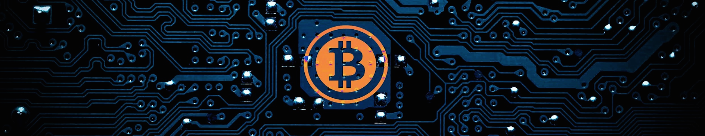
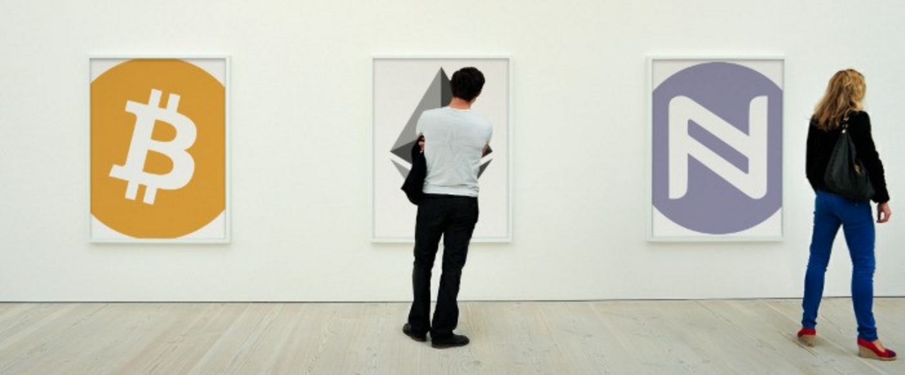

Blockchain

Tehnologija veriženja blokov (ang. blockchain) je distributirana podatkovna baza, ki beleži neprestano rastoč seznam dogodkov imenovanih bloki. Tipično gre za peer-to-peer omrežje. V svoji zasnovi so verige blokov odporne proti spreminjanju podatkov. Po vnosu v sistem, se blok ne more spreminiti. Ker so zgrajene varno, lahko dosežemo konsenz zaupanja, kar nam omogoče beleženje ranoraznih podatkov : dogodkov, zdravstvenih podatkov, indenitete, transakcij ipd. Prvi blockchain je bil Bitcoin leta 2008, danes pa obstaja preko 700 t.i. "kriptovalut".
Trenutno zelo prilubljen in nadvse uporaben sistem je Ethereum, ki omogoča pisanje "pametnih pogodb", kjer se lahko avtomatizirajo določeni procesi, kjer so prej bili potrebni zunanji sodelavci za potrjevanje resničnosti oz. pravilnosti podatkov. Podjetja, kot so IBM, Microsoft, Samsung, Toyota, JP Morgan, Credit Suisse, Uber, AirBnb že uporabljajo pametne pogodbe, sledijo jim tudi druga podjetja.
Preko implementacije blockchain tehnologij razbijamo koncepte, kot so država, banka, notar, borzni posrednik ipd. ter dajemo moč posazmenikov v svoje roke!
Če te zanimajo osnove tega sveta, klikni tukaj !!!
Pomoč

Če imate kakršnokoli vprašanja o trenutnem stanju v kriptosvetu (razvijajoči se projekti, kako investirati, kaj pomeni to in ono,...) mi brez problema pišite in Vam bom odgovoril po najboljših močeh.
Vsak nasvet ni poziv k dejanju - za svojo premoženje odgovarjate sami in vedno tvegate, kolikor ste pripravljeni izgubiti!
Če te zanimajo osnove tega sveta, klikni tukaj !!!
O meni
Sem navdušenec nad tehnologijo in neomejenimi možnostmi, ki nam jih le ta omogoča. S kripto svetom sem intenzivneje v stiku od leta 2014, v preteklem letu pa se ukvarjam tudi s trgovanjem ter svetovanjem prijateljem ter bližnjim.
Trenutno me najbolj navdušuje sistem Ethereum ter projekti, ki so zgrajeni na njem s pomočjo pametnih pogodb (npr. Golem, Augur, Iconomi, Akasha). Verjamem, da ne potrebujemo nikogar, ki bi nam vladal ter posledično razpolagal z našim premoženjem ali osebnimi podatki ter od tega mastno služil na naš račun. Vrednote starega veka so izumrle, imamo na voljo tehnologijo, ki jo hlapčevske generacije za nami niso imele. Prišli smo do točke v času, ko nam le-ta omogoča vzeti moč opresorjem ter jo vrniti tam, kjer spada - k vsakemu posameziku!
Sistemi, kot so blockchain, nam dopuščajo medsebojno povezovanje kakršnega nismo bili vajeni v današnji dobi. Vrata se odpirajo in ideje se množijo. Vabljeni, da pokukamo skupaj v novi svet!
Kontakt
// Pišite mi na kriptomat@protonmail.com !
// Z veseljem Vam bom poskušal odgovoriti v najkrajšem možnem času :)
// Medtem si lahko preberete moj Uvod v kript0anarhijo
// + spodnje povezavice:
Novice